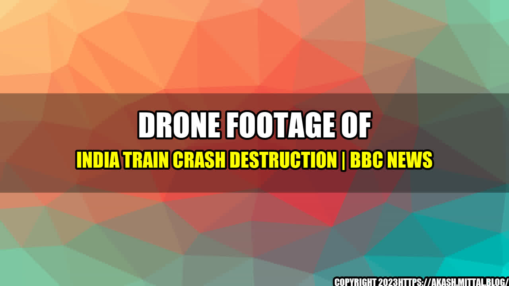

India Train Crash Kills Dozens as Drone Footage Shows Extent of Destruction
A train derailment in India has killed at least 23 people and injured more than 80, with rescue efforts continuing at the site of the crash. Drone footage has revealed the full extent of the destruction caused by the accident, which occurred in the state of Uttar Pradesh in the early hours of Wednesday morning.

The drone footage, captured by local media outlets, shows the mangled remains of the train carriages and the surrounding area. The impact of the crash was so severe that some of the carriages were tossed onto adjacent tracks, making it difficult for rescue workers to access them.
Case Studies
This is not the first train accident to hit India in recent years. In 2016, a train derailment in the northern state of Uttar Pradesh killed 146 people and injured more than 200. In 2017, an express train collided with a freight train in the same state, killing 23 people and injuring more than 80.
Experts have cited various reasons for the high number of train accidents in India, including poor infrastructure, insufficient investment in modernization, and a lack of proper safety measures. In addition, the country's vast rail network is overcrowded, with trains carrying more passengers than they are designed to handle.
Efforts are underway to improve safety on India's railways, including the installation of newer and more advanced signalling systems, the use of drones to monitor tracks, and the introduction of high-speed trains. However, progress has been slow, and accidents continue to occur.
Conclusion
The India train crash is a tragic reminder of the urgent need for improvements in the country's rail system. The authorities must take bold and decisive action to address the root causes of these accidents, and to ensure that passengers can travel in safety.
A comprehensive approach is required, including increased investment in modernization and infrastructure, the implementation of stricter safety regulations, and the use of advanced technology to monitor trains and tracks. Only by taking such steps can India's railways become safer and more efficient in the years to come.
Curated by Team Akash.Mittal.Blog
Share on Twitter Share on LinkedIn